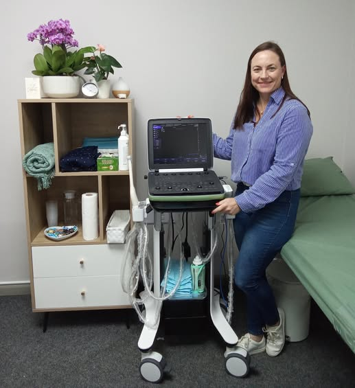

Precision through
The Human Lens
Accurate, high-quality diagnostic ultrasound delivered with care, calm, and over 20 years of clinical experience — based at Intercare Blaauwberg in Cape Town.
A broad spectrum of diagnostic imaging.
From musculoskeletal and abdominal scans to vascular, pelvic, and small parts imaging — every examination is delivered with the same care and attention to detail.
Musculoskeletal & Soft Tissue
Real-time assessment of joints, tendons, ligaments, lumps, and swellings — ideal for sports injuries, pain investigation, and limited movement.
Vascular
Carotid, venous, and arterial studies to assess blood flow and circulation.
Book Scan arrow_forwardAbdominal
Liver, gallbladder, kidneys, and spleen — performed with accuracy and patient comfort.
Book Scan arrow_forwardSmall Parts & Pelvic Ultrasound
High-resolution imaging of the breast, thyroid, scrotum, and pelvic organs for focused diagnostic assessment.

20+ Years
Clinical Experience
Committed to accurate & ethical medical imaging.
Hi, I'm Lynne Marais — a Diagnostic Sonographer based at Intercare Blaauwberg in Cape Town. I provide high-quality ultrasound examinations with a strong focus on patient comfort, care, and a personal touch.
The Ultrasound Studio works closely with referring healthcare professionals to support reliable diagnosis and quality patient care.
Ready to make a booking?
Schedule your appointment online — quick, easy, and at your convenience.